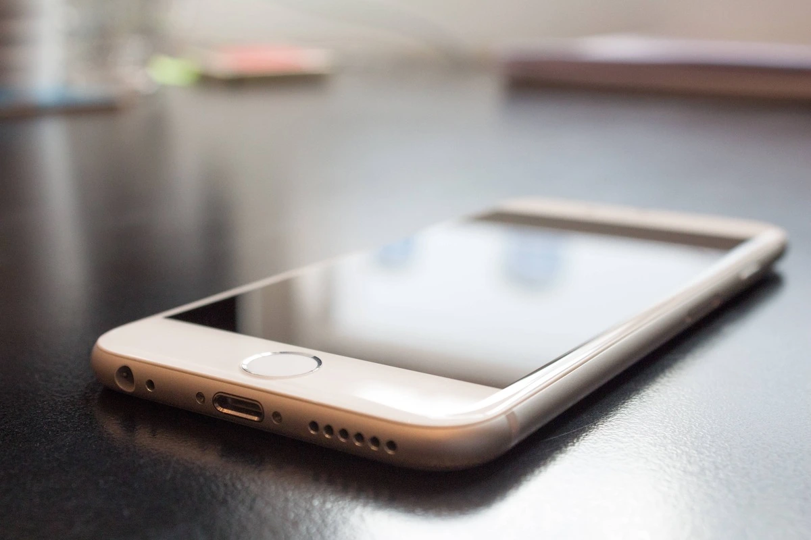

Crafting a mobile application may seem hard, especially if you're new to the world of app development.
But fear not! With the right guidance and resources, it can be a fulfilling journey that can pave the way for business success.
In this guide, we'll break down the app-building process into simple, easy-to-follow steps, and share valuable tips and insights to help you along the way.
Whether you're a small business owner aiming to expand your reach or an aspiring entrepreneur with a brilliant app idea, our mini-guide is here to assist you in navigating the intricacies of app development.
Essential Steps To Build Your First App Right
Let's walk you through the essential steps you need to take care of if you want to build your first app the right way.
Take a look below.
What are your goals?
When embarking on a new project, the first and foremost step is to come up with a brilliant idea. However, it's crucial to not rush into the nitty-gritty details just yet.
Before diving in, it's essential to clearly define the purpose and mission of your mobile application.
This entails identifying what your app will do, its core appeal, and the specific problem it will solve or the aspect of life it will enhance.
By defining a clear goal for your app, you'll not only provide it with a sense of direction but also expedite the development process.
Having a well-defined idea of what your app aims to achieve allows you to concentrate your efforts on its key features and functionality, making it more feasible to achieve your desired outcome. It's a vital step that sets the foundation for a successful mobile application.
Research
Now that you've defined the goal behind your app, it's time to conduct thorough research. This phase is crucial as it will equip you with the knowledge of what needs to be done and how in order to create an app that outshines its competitors.
Here are the goals you need to achieve during your research:
- Identify whether similar apps already exist in the market.
- Seek inspiration for the design of your app.
- Gather information about the technical requirements for your app.
- Understand effective strategies for marketing and monetizing your app.
It's important to acknowledge that despite having a groundbreaking idea, there's a high likelihood of finding similar apps already in existence, with millions of apps available for Android and iOS devices.
Creating something entirely unique may be a challenging goal to attain. However, this should not discourage you from pursuing your vision.
Instead, it's crucial to focus on your own project and acquire users for it. Studying the strengths and weaknesses of your competitors can provide valuable insights for improving your own app while letting go of any negative thoughts about them is essential.
By concentrating on your own app's potential and constantly striving for improvement, you can pave the way for success in the competitive app market.
Prototype
In this phase, your ideas and proposed features start to come together, forming a more tangible vision for your app. Wireframing plays a crucial role in this process, as it involves creating a prototype or mockup of your app.
Fortunately, there are numerous prototyping tools available online for this purpose, making it easier to bring your vision to life.
As you work on your wireframes, it's also advisable to develop a storyboard for your app. This entails building a roadmap that illustrates the connection between each screen and the user's navigation path through the app.
By doing so, you'll gain a better understanding of how your app will function and how users will interact with it, ultimately helping you refine your app's design and user experience.
Back end
The wireframes and storyboard that you have created serve as the foundation for building the back-end structure of your app.
It's recommended to sketch a diagram that outlines the servers, APIs, and data diagrams, as this will serve as a useful reference for developers and make it easier for new team members to understand the project.
Furthermore, it's crucial to be open to modifying your wireframes and storyboard based on any technical limitations that may arise during the development process.
Adapting your design to meet technical requirements can ensure that your app functions smoothly and efficiently, and may even reveal new opportunities for optimization and improvement.
By aligning your design with technical considerations, you can create a seamless user experience and unlock the full potential of your app.
Test, test, test
Take a look back at your wireframes and seek feedback on your prototype from various sources such as friends, family, colleagues, and experts.
Provide them access to the wireframe and encourage them to test-run your app, while requesting honest feedback and identifying any flaws or dead-end links they may encounter.
If possible, invite them to your studio to try out the prototype in your presence, and observe their interactions with the app, taking note of their actions and adjusting your UI/UX accordingly.
The objective here is to solidify your app concept before moving into the design phase. Once you start designing, making changes becomes more challenging, so it's crucial to have a clear and comprehensive prototype from the beginning.
By gathering feedback and refining your prototype, you can ensure that your app is user-friendly and aligns with your vision before proceeding to the design stage.
Benefits of partnering up with expert developers
When it comes to creating mobile apps, there are several options available to you. You can choose to hire dedicated developers or outsource your project to a reputable mobile app development team.
The most astute approach is to engage a dedicated development team from one of the leading app development companies, as they offer numerous advantages over freelancers.
Let's explore the various benefits provided by a dedicated team in more detail.
Safe and secure method
Engaging a mobile app development team has a significant advantage in terms of security, as they assume responsibility for ensuring the safety of your data and information.
The team you hire needs to implement top-tier security measures to safeguard your project.
Cost-effective
Mobile app development can often be a cost-effective and flexible solution for various types of applications, including gaming and e-commerce apps.
A dedicated development team can help you complete your project within your budget, while also providing you with customized services tailored to your specific needs.
Resources and expertise
One major advantage of hiring a mobile app development team is the wealth of expertise and resources that they provide as part of their comprehensive package.
By engaging their services, you gain access to cutting-edge tools, licenses, and software languages necessary for developing mobile apps.
Quality
The development team has a reputation to uphold, which means they will take all necessary steps to maintain their standing.
They are also up-to-date with the latest technologies and programming languages, allowing them to work more efficiently and effectively toward delivering high-quality products that generate positive feedback upon the app's launch.
Final Thoughts
This is what you'll need for a positive start to your app development journey. However, it is always wise to seek expert help if you need it.
That's why you should not hesitate to reach out and book a free consultation where we'll help you evaluate your needs and give you expert advice on how your idea can be transformed into a fully-fledged application.